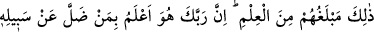
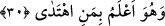

“Bizi anmaktan yüç çeviren (kimseden yüz çevir)” kavl-i celilesi yukarıdaki sözü
geçen üçüncü tedavi şekline işâret etmektedir. Allah’ı anmaktan yüz çevirmek; Allah’ın
varlığına, vahdetine ve sâir sıfatlarına delâlet eden delillerden sarf-ı nazar etmek
mânâsında olan kinâyeli bir sözdür. “Dünya hayatından başka bir şey istemeyen
kimseden (yüz çevir)“ kavl-i şerifi ise o müşriklerin haşri inkâr ettiklerine işâret
etmektedir. Zira her kim haşr ve hesabın olacağını itiraf etmesze, korkmaksızın Allah
Teâlâ’nın delillerinden vazgeçmekten uzaklaşmazsa, o kişi mârifetullah’a ulaşamadığı
gibi Rasûlü (a.s.)’ne de uymaz. Binâenaleyh Nebî (a.s.)’nin sözleri ve dâveti ona bir
fayda sağlamaz. O insan için yapılacak tek şey kalır, o da tedaviyi bırakıp onunla savaş
yapmaktır.
Şunu bil ki, bir kimse efendisinin huzurundan uzaklaştığı nisbette dünya hayatına
dalmış sayılır. Her kim zühdü, vera ve takvâyı, keşfi, kerâmeti ve mûcizeleri terk eder;
insanlar tarafından kabul görmeye ve onların arasında ün yapmaya, makam ve mal elde
etmeye niyet ederse o kimse ancak dünya hayatını istemiş olur. Bu suretle tüm ahvâlini
zâyi ettiği gibi bütün söz ve fiillerini de zarara sokmuş olur. Çünkü bu söz ve fiillerinin
Allah’ın indinde hiç bir semeresini alamaz.
Ey oğul Zeyd’in evinde çalışıyorsan
Amr’dan boşuna ücret bekleme.
Bu durumda olan kimse bir takım keşifler elde ettiği ve dünya ehli kendisine
meylettiği için gururlanmasın. Zira elde ettiği bu hususlar ona peşin verilen bir
karşılıktır, âhirette ise hiç bir karşılık alamayacaktır. Bilmezmisin ki İblis, Allah
Teâlâ’ya dokuz bin sene ibâdet ettikten sonra inkâr edip Allah’a: “(Bari) bana tekrar
dirilecekleri güne kadar süre ver” (el-A’raf, 7/14) dedi. Allah Teâlâ da ona mühlet
verdi. İşte ona verilen bu mühlet, dünya hayatının peşin ödemesi idi.
30. İşte onların erişebilecekleri bilgi budur. Şüphesiz ki senin Rabbin, evet O,
yolundan sapanı daha iyi bilir; O, hidâyette olanı da çok iyi bilir.
“İşte onların” dünyaya âid “erişebilecekleri bilgi budur.”
Bahru’l-ulûm’da onların erişebilecekleri şey, dünyayı âhirete tercih etmek; İrşad’da
ise “âhiretten yüz çevirip irâdeyi dünya hayatına hasretmek” şeklinde açıklanmıştır.
Bundan ötesine geçip dâvet ve irşâda lâyık bir hâle gelemezler. Nitekim Allah Teâlâ bu
husûsu “onlar, sadece şu yakın hayatın dış yüzünü bilirler- âhiretten ise onlar
tamamen gafildiler.” (er-Rum 30/7) âyetinde beyân etmektedir.